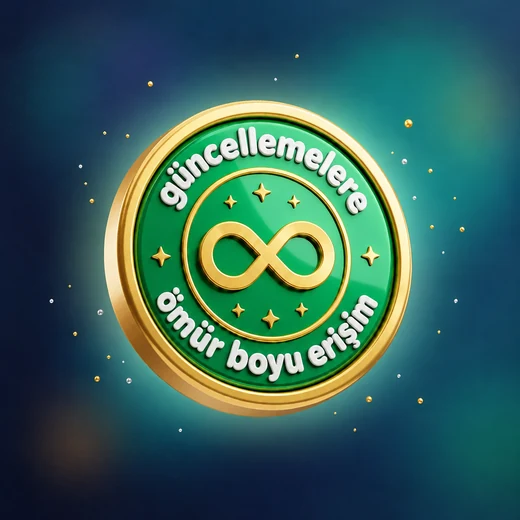

1. bonus
Güncellemelere Ömür Boyu Erişim
Erişiminizin süresi dolmaz: bu sayfayı istediğiniz zaman yeniden açabilir, her şeyi tekrar indirebilirsiniz.

Erişiminizi böyle kaydedin
- Bilgisayarda: ansiklopedi sayfasını açın ve yer imlerine eklemek için Ctrl+D tuşlarına basın (Mac'te Cmd+D).
- Telefonda: tarayıcı menüsünden “Ana ekrana ekle” seçeneğini seçin.
- Satın alma sonrasında gelen e-postayı da saklayın: bağlantı orada da var.
Yalnızca kişisel ve aile içi kullanım içindir. Yeniden satılması ve paylaşılması yasaktır.